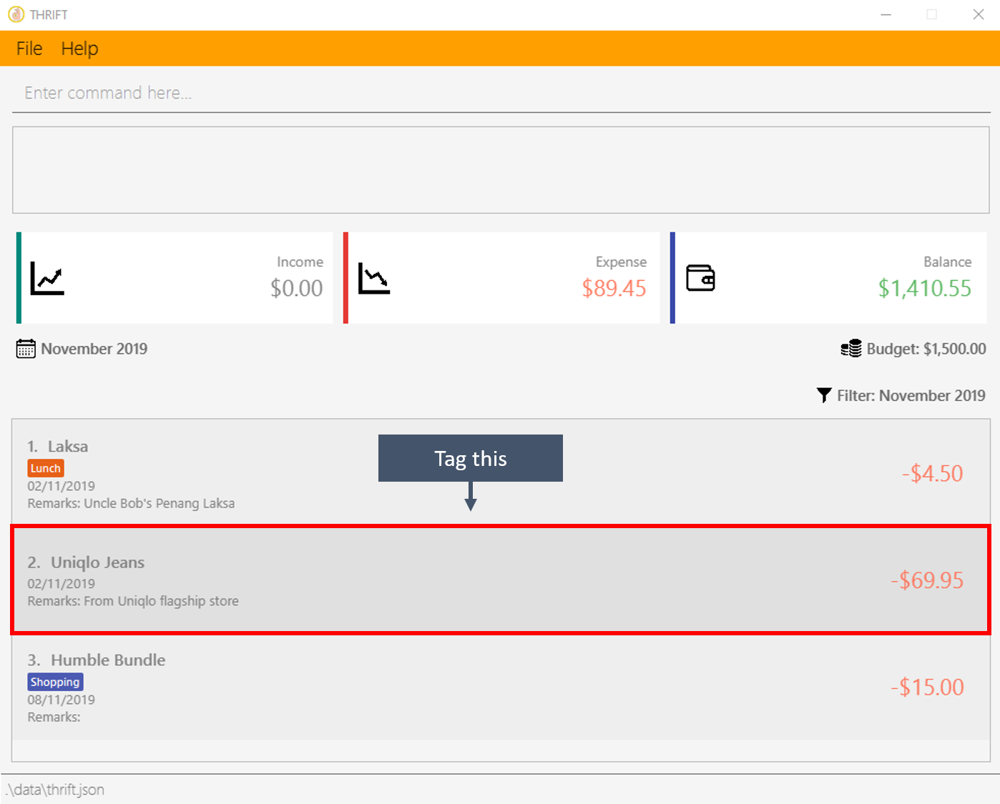
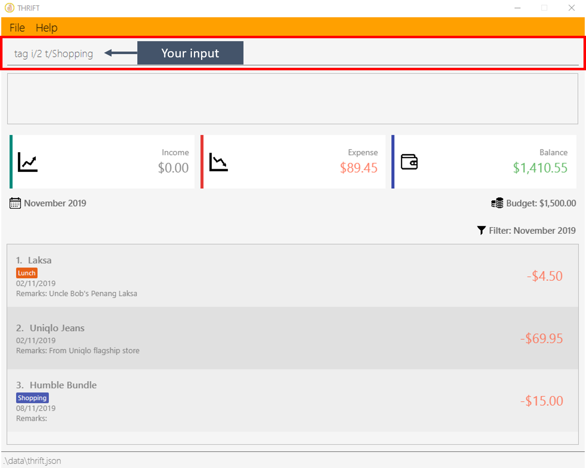
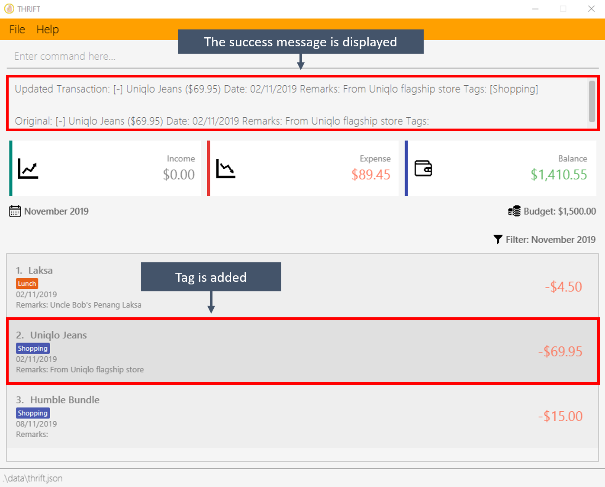
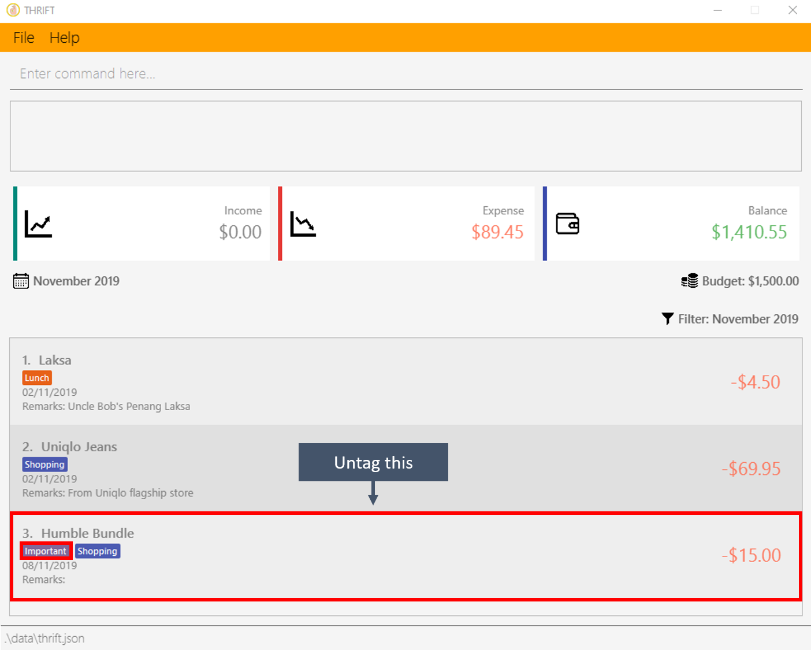
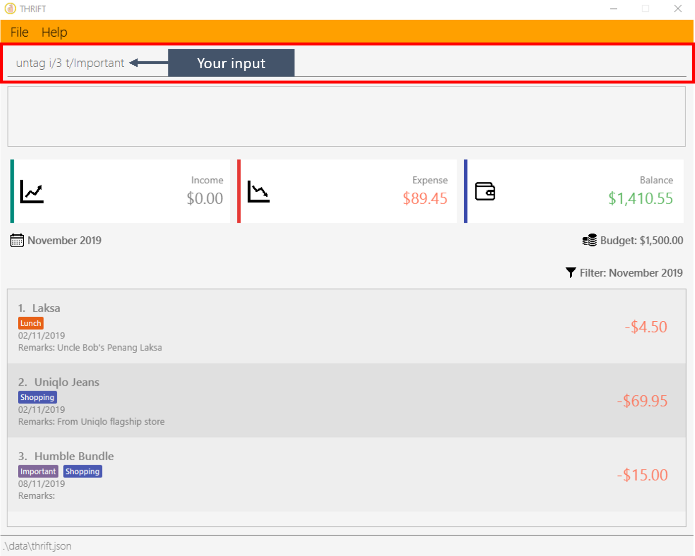
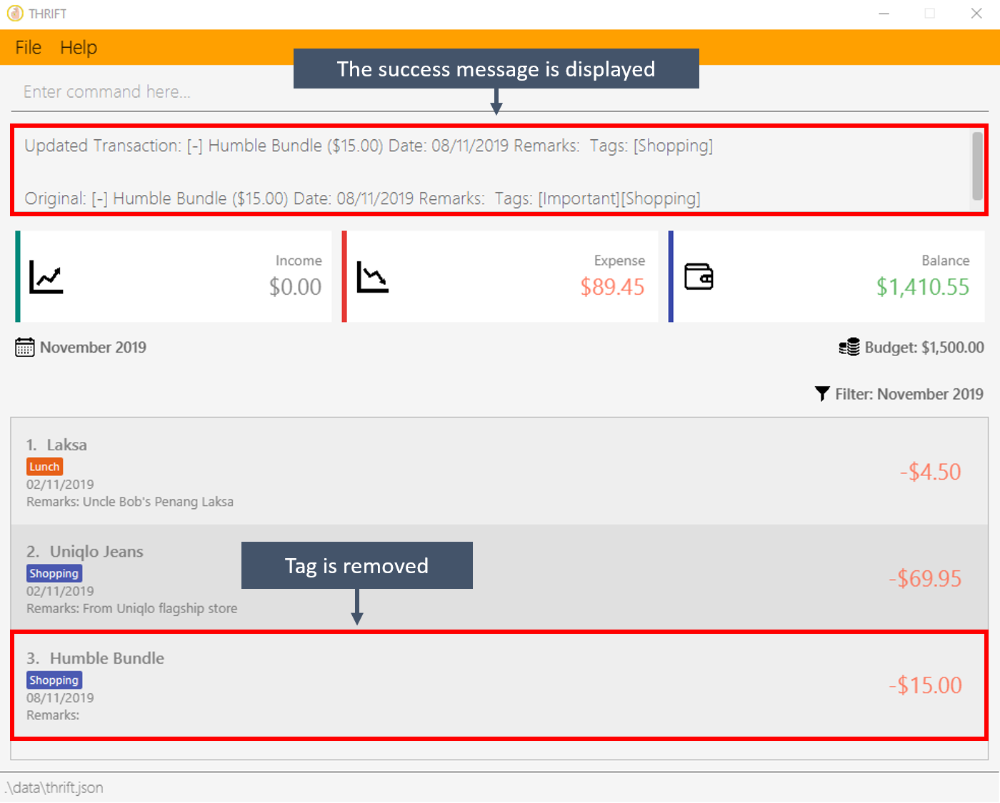
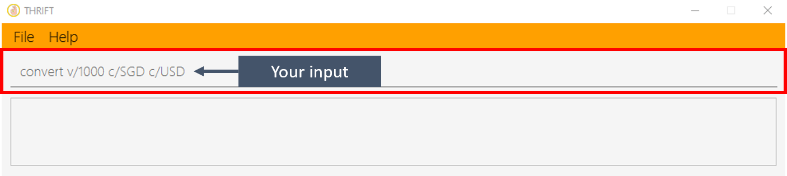
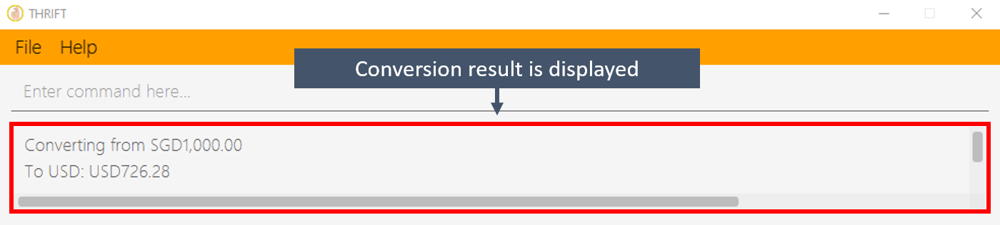

1. Introduction
This portfolio serves to showcase my contributions to our team project THRIFT. The project was part of the requirements of a year two software engineering module, CS2103T, that I had taken as an undergraduate in NUS.
1.1. About THRIFT
THRIFT is an application for money-conscious NUS students who wish to track their incomes and expenditures so that they can make informed financial decisions. THRIFT is designed for those who prefer to work quickly with a Command Line Interface (CLI) while still enjoying the benefits of having a Graphical User Interface (GUI). This is how the user interface of THRIFT looks like:

THRIFT is a fork from the original AddressBook-Level3 application which allows users to create a personalised list of contacts. My team and I have since transformed the application to suit our use cases.
1.2. About the THRIFT Team
The THRIFT team consists of five passionate developers and I was the Software Architect, who is in charge of documentation. The other team members and their respective roles were:
-
Poh Jia Hao (Team Lead)
-
Lee Bo Qiang (User Experience Developer),
-
Lye Jian Wen (Quality Assurance Manager)
-
Kenson Oen (Process Analyst).
Every single member played an important and major role in ensuring the success of THRIFT.
1.3. About this document
In this document, I will use some special text styling as described below to help you understand the document better.
| This symbol denotes information you might want to note of. |
currencyMappings
|
Text with grey highlight (called a mark-up) indicates that it is a method/variable name or a command. |
ModelManager
|
Bold text within a mark-up indicates a class/package name. |
2. Summary of Contributions
This section provides a summary of the various contributions I have made to THRIFT.
2.1. Code contributed
You can follow these links to view a sample of my code:
[Commits] [Pull requests] [RepoSense Dashboard]
2.2. Functionality enhanced
The following are some of my enhancements:
-
Major enhancement: Added the ability to tag and un-tag entries in the transaction list.
-
What it does: The
taganduntagcommands allow the user to tag and un-tag their transactions. -
Justification: It allows users to add and remove specific tags from transactions.
-
Highlights: The original AB3 edit function replaces the entire set of tags related to a transaction entry. My
tagcommand adds to the set instead of overwriting it, with duplicate tags being detected and ignored. Myuntagcommand removes specified tags from the set instead of overwriting it, with the user being warned for trying to delete non-existent tags.
-
-
Major enhancement: Added the ability to convert currency.
-
What it does: The
convertcommand allows the user to convert currency from one to another within the application. -
Justification: It is possible that user wants to travel overseas or simply purchase something in another currency, they would then want an estimate of the exchange rates they can get.
-
Highlights: The
convertcommand has the ability to use exchange rates stored in a JSON file, which can be obtained by downloading and modifying the JSON output from free online exchange rate services to obtain the latest rates. -
Credits: The sample rates were obtained from the European Central Bank.
-
-
Minor enhancements: Modified the THRIFT interface to display tags in different colours.
-
Justification: Tags in THRIFT are meant to categorise the different transactions, it is more meaningful if tags are of different colour if they correspond to different categories.
-
Highlights: The colours are coloured into different colours if they are a keyword, otherwise they are in Purple.
-
2.3. Other contributions
-
Project management:
-
I managed issues assigned to me from version 1.0 to 1.4 on GitHub.
-
-
Enhancement to existing features:
-
I added a function to the existing class
ArgumentMultimapto enforce the return of no more than one argument value. (Pull request #118)
-
-
Documentation:
-
I added the sections related to
tag,untagandconvertcommands in the User Guide. (Pull Requests: #69, #178, #201) -
I added the sections related to the
tagcommand, theuntagcommand and the planned feature on Artificial Intelligence in the Developer Guide. (Pull Requests: #79, #178, #201, #267) -
I managed the THRIFT documentation and ensured its quality. (Pull Requests: #72, #77, #179, #200, #223, #275)
-
-
Community:
3. Contributions to the User Guide
The following section showcases my use of proper documentation to guide users through the many features of THRIFT.
{Start of extract from the section on the tag command}
3.1. Tagging a transaction: tag
If you want to categorise your incomes and expenses, you can associate them with a custom meaningful tag using the tag command.
3.1.1. Command syntax
To execute the tag command, you have to use the following syntax:
tag i/INDEX t/TAG_NAME…
3.1.2. Example usage
Assume you have a few transaction entries already inside THRIFT, and one of them is not categorised yet. You want to tag that entry with a meaningful tag.
Here’s how you can do that:
-
You want to tag "Uniqlo Jeans" (the entry displayed at index 2) with the tag Shopping since it’s part of your shopping.
 -
You type tag i/2 t/Shopping into the Command Box and press Enter.
 -
You will now see that a text representation of both the updated and original entry is displayed in the Result Box and that the tag has appeared at the entry indicating that it has been successfully tagged.

{Start of extract from the section on the tag command}
{Start of extract from the section on the untag command}
3.2. Untagging a transaction: untag
An entry can be associated with an incorrect tag due to various reasons.
Perhaps you made a mistake tagging the entry or perhaps the tag became invalid as it lost its meaning over time,
you can fix that by dissociating the tag from the entry using the untag command.
3.2.1. Command syntax
To execute the untag command, you have to use the following syntax:
untag i/INDEX t/TAG_NAME…
3.2.2. Example usage
Assume you have a few transaction entries already inside THRIFT, and one of them has an incorrect tag. You want to dissociate the incorrect tag from that entry.
Here’s how you can do that:
-
You want to dissociate the tag Important from "Humble Bundle" (the entry displayed at index 3) since it is not very important.
 -
You type untag i/3 t/Important into the Command Box and press Enter.
 -
You will now see that a text representation of both the updated and original entry is displayed in the Result Box and that the tag has disappeared from the entry indicating that it has been successfully removed.

{End of extract from the section on the untag command}
{Start of extract from the section on the convert command}
3.3. Converting currency: convert
If you want to travel overseas or go on exchange, you will definitely need foreign currencies.
To see how much foreign currency you can get with your local currency, you can use the convert command to get an estimate.
3.3.1. Command syntax
To execute the convert command, you have to use the following syntax:
convert [v/VALUE] c/CURRENCY…
3.3.2. Example usage
Assume you want an estimate of how much foreign currency you can get with your local currency and you want to do so without leaving THRIFT.
Here’s how you can do that:
-
You want an estimate on how much USD you can get with SGD1000.
-
You type convert v/1000 c/SGD c/USD into the Command Box and press Enter.
 -
You will now see the result of the conversion displayed in the Result Box.

{End of extract from the section on the convert command}
4. Contributions to the Developer Guide
The following section demonstrates my ability to document technical implementations that give developers insight on the application design. My contributions to the technical depth to THRIFT is also shown.
{Start of extract from the section on the tag/untag commands}
4.1. Tag/Untag feature
We allow the user to add and remove custom Tag objects in Transaction entries so that they can categorise the entries to their own liking.
The following sections describe how this feature is implemented and the design considerations that led up to the solution.
4.1.1. Implementation
The tag/untag command performs modifications on existing Transaction entries that reside in the Model. Implemented using the concept of polymorphism , both Expense and Income objects extend the abstract class Transaction, and are treated the same way in the context of the tag/untag command.
Tag inside a TransactionDue to this polymorphic implementation, many of the driver functions in THRIFT use the Transaction class for both Expense
and Income objects. For example, when tagging a new Expense/Income object, the TagCommandParser will treat them as the same object:
TagCommandParser is calledWhen a user enters a tag/untag command, it is parsed by the respective TagCommandParser#parse(String args) and UntagCommandParser#parse(String args) parsers and returns a TagCommand command object or a UntagCommand command object respectively, which will be executed. For both commands, the following conditions will cause a ParseException to be thrown by their respective parsers:
-
Missing parameters
-
Incorrect syntax (i.e. missing prefix, if it is required)
-
Illegal values in parameters (i.e. non-alphanumeric values given for
Tagnames) -
Multiple occurrences of parameters which only expects a single entry
| If the user input is incorrect due to any of the reasons above, the corresponding usage syntax will be shown. |
The following is an example on how a Tag is added and removed from a Transaction, with details on the processes done in the backend.
Step 1. The user launches the application with data from previous sessions. THRIFT currently contains two Transaction objects and the user is going to perform tagging and un-tagging operations on one of them.
Step 2. The user executes the command tag i/1 t/Delicious to tag the Transaction at Index 1 with the Tag "Delicious". The input is checked with the TagCommandParser parser and an attempt to parse each parameter occurs:
-
Indexis parsed byParserUtil#parseIndex(String) -
Tagstrings are parsed byParserUtil#parseTags(Collection<String>)which callsParserUtil#parseTag(String)iteratively for every string in the collection
ParserUtil is a class that contains useful functions for parsing the inputs from the user.
|
Tags that already exist inside the specified Transaction will be ignored, and if that results in no tags being added, an error will be shown to the user.
|
Since the user input is valid, a TagCommand command object is created and executed. As a result, a copy of the Transaction object with the specified Tag added replaces the original in the TransactionList at the same position.
Step 3. The user realises that the Tag added was not appropriate. The user then executes the command untag i/1 t/Delicious to untag the Tag "Delicious" from the Transaction at Index 1. The input is now checked with the UntagCommandParser parser and similarly, an attempt to parse each parameter occurs.
-
Indexis parsed byParserUtil#parseIndex(String) -
Tagstrings are parsed byParserUtil#parseTags(Collection<String>)which callsParserUtil#parseTag(String)iteratively for every string in the collection
Tags that do not exist inside the specified Transaction will be ignored, and if that results in no tags being deleted, an error will be shown to the user.
|
Again, since the user input is valid, a UntagCommand command object is created and executed. As a result, a copy of the Transaction object with the specified Tag deleted replaces the original in the TransactionList at the same position.
The following activity diagram summarises what happens when the user executes a command to tag a Transaction.
The untag command follows the same flow except for the following differences:
-
Continues with the operation only if at least some
Tagobjects exist inTransactionto be un-tagged -
Ignores
Tagobjects that do not already exist in theTransactionas they are not valid for deletion
4.1.2. Design considerations
Aspect: Mutability of Transaction objects
The mutability of the Transaction objects will affect how well the code follows convention, and here are two designs that can be considered:
-
Alternative 1: (current choice): Create a copy of the
Transactionobject with modified tags and replace the original in theTransactionList-
Pros: Adheres to the Open-Closed principle of the SOLID design principles, guarantees the resultant
Transactionto be as expected and not modified incorrectly during the tag/untag process. -
Cons: Creates a copy of the
Transactionduring the tag/untag process and increases the space complexity of the process.
-
-
Alternative 2: Modify the
Transactionobject directly to modify tags.-
Pros: Modifies the
Transactionobject in place, thus the space complexity of the process is constant. -
Cons: Violates the Open-Closed principle of the SOLID design principles, the
Transactionobject can be modified incorrectly during the tag/untag process.
-
Alternative 1 was chosen as we want to ensure the correctness of the tag/untag process.
Aspect: Uniqueness of Tag objects within a Transaction
The uniqueness of Tag objects within a Transaction will determine how meaningful a tag is, and here are two designs that can be considered:
-
Alternative 1: Do not check if the
Tagobjects exist(s) within aTransactionwhen addingTagobjects and implicitly allow duplicates.-
Pros: Results in a simpler implementation of tag command, as there is no need to check for potential duplicates.
-
Cons: Makes each tag less meaningful as they are no longer unique.
-
-
Alternative 2: (current choice) Check if the
Tagobjects exist(s) within aTransactionwhen addingTagobjects, explicitly prevent duplicates.-
Pros: Makes each tag more meaningful as they are unique.
-
Cons: Results in a more complex implementation of the tag command, as there is a need to check for potential duplicates.
-
Alternative 2 was chosen as we want to ensure that tags are meaningful to the user.
{End of extract from the section on the tag/untag commands}
{Start of extract from the section on the proposed AI extension}
4.2. [Proposed] Artificial Intelligence (AI)
Artificial intelligence (AI) is the simulation of human intelligence processes by machines such as computer systems. AI tries to mimic the learning process of humans in order to perform self-correction.
We want THRIFT to possess the ability to make calculated decisions and provide the user with appropriate recommendations under the appropriate situations.
This way, we can enhance the user experience and make our application more effective.
The following sections will describe how we plan to implement this feature and the possible design considerations.
4.2.1. Proposed Implementation
Adhering to the Open-Closed principle, we will not modify the existing architecture but extend it. The following class diagram illustrates how we propose to do it, by adding 2 new classes to the existing architecture:

The new classes will have the following roles:
-
AI: Analyses data from theDataand perform machine learning on it. If the need arises, feedback to theDataclass to morph the data inside. Modifies the actions taken by theLogicManagerclass based on the machine learning model. -
Data: Collects data fromThriftand formats to it to a form understandable by theAIclass. It can be modified by theAIclass in the process of machine learning.
4.2.2. Design consideration
Aspect: Portability of the learning model
The portability of the learning model will determine the complexity of the implementation and the following designs can be considered:
-
Alternative 1: Include the machine learning algorithms and models with the application
-
Pros: Allows the application to be portable and self-contained
-
Cons: Results in a larger application size
-
-
Alternative 2: Develop the machine learning algorithms and models as a separate application, which can be offloaded to a remote location
-
Pros: Allows the main application to be smaller in size
-
Cons: The application is no longer portable and self-contained, and have to depend on the availability of the remote application
-
We believe that both alternatives can be considered as choosing either option brings a different benefit to THRIFT.
A hybrid implementation of both alternatives can also be considered.
Regardless of what is eventually chosen, the user experience will be improved by artificial intelligence.
{End of extract from the section on proposed AI extension}